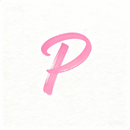

Ponys.ai ResearchAI 캐릭터 품질 평가 툴킷
근거 기반 AI 컴패니언 콘텐츠를 만드는 편집자, 리뷰어, 크리에이터를 위한 재사용 자료입니다.
Ponys.ai에서 AI 캐릭터 살펴보기공개 평가 방법
Private mode and deletion audit
Reference-image identity drift protocol
Character video continuity rubric
Multilingual companion voice drift protocol
Reuse and citation
Publishers may cite a protocol, reuse the blank evidence schema, or embed the visible-attribution card. Keep the method URL, test date, denominator, and disclosure with any claimed result.